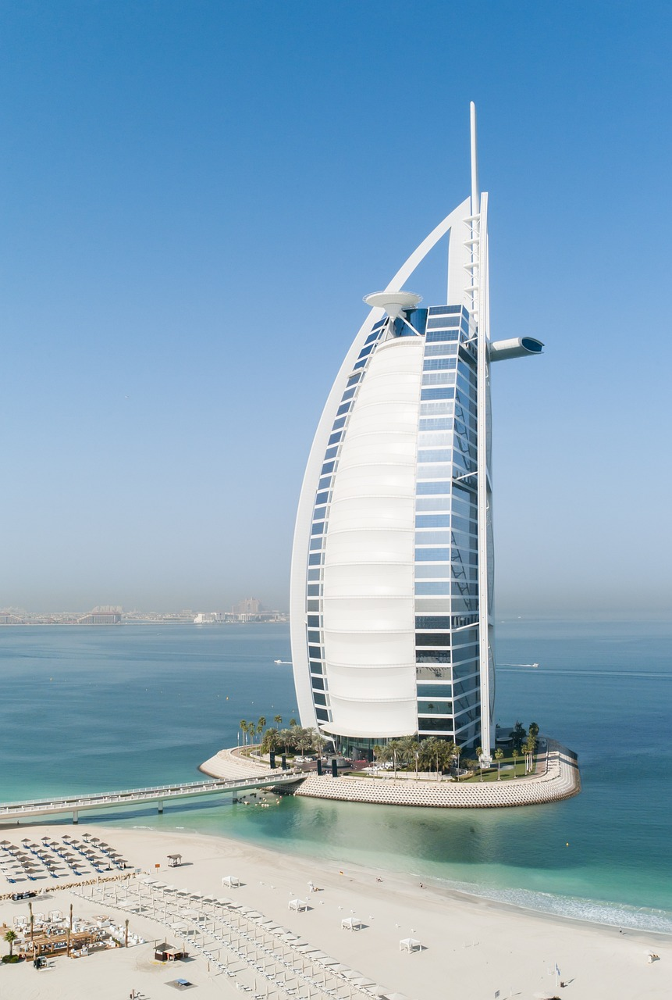
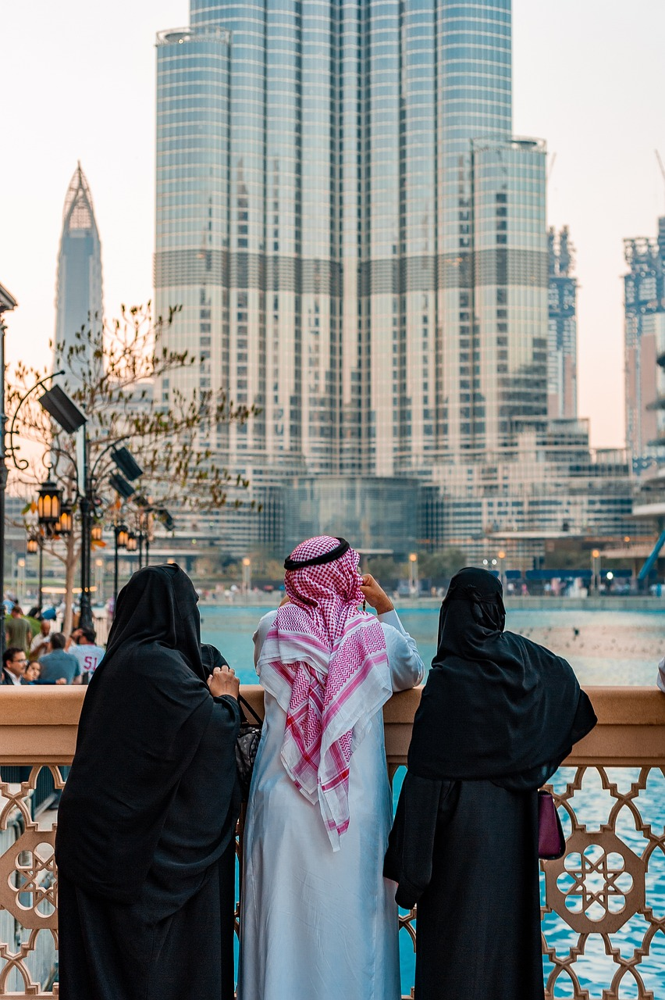

Le Burj al-Arab (برج العرب « Tour des arabes » en arabe) est un hôtel
proclamé « sept étoiles » par certains journalistes1, situé à Dubaï,
aux Émirats arabes unis. Mesurant 321 mètres, il était, jusqu’en 2007,
l'édifice utilisé exclusivement comme un hôtel le plus élevé (le plus
haut est désormais le JW Marriott Marquis, également à Dubaï). Il est
particulièrement reconnaissable à sa forme de voile géante. Conçu en
1993 par l’architecte Tom Wright2, il est construit sur une île arti-
ficielle du golfe Persique. Il a été inauguré en décembre 19993.
L'islam est la principale religion à Dubaï. Dès votre arrivée,
vous serez surpris par l'abondance et l'importance des mosquées.
Ainsi, 96% de la population dubaïote se révèle être musulmane,
même si d'autres religions comme l'hindouisme, le christianisme
et le bouddhisme sont également représentées.Le mode de vie à
Dubaï offre une grande commodité à la plupart des expatriés.
On trouve de nombreux étonnants centres commerciaux dans la
ville. Dubaï abrite également le plus grand centre commercial
du monde. Outre les nombreuses possibilités de shopping, les
expatriés bénéficient également d'achats hors taxes.
